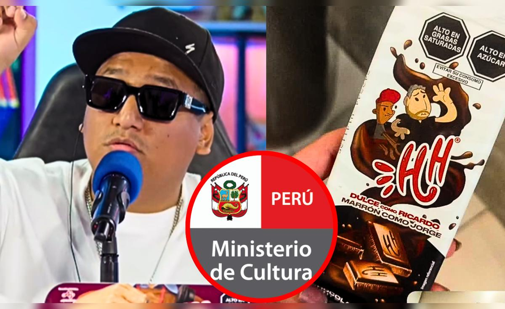

LO MÁS LEÍDO
Jorge Luna ganó acusación de discriminación interpuesta por el Mincul contra él mismo: “Voy a apelar”
El comediante peruano Jorge Luna comunicó a su audiencia que el Ministerio de Cultura (Mincul) lo absolvió de la denuncia por discriminación que inició tras autodenominarse “marrón” en un comercial de chocolates.
La noticia se conoció durante la última edición de 'Hablando huevadas', donde el humorista relató con ironía y sarcasmo el desenlace del caso.
“Ha pasado casi un año desde que el Estado decidió involucrarme en esta payasada y ya tenemos una respuesta. Quiero contarte que yo, como persona que discriminé a mi persona, he quedado libre de la acusación de discriminación en mi contra”, expresó Jorge Luna.
Además, anunció que “apelará” la resolución, pero con fines humorísticos: “Quiero gastar más plata hasta encontrarme culpable de haberme discriminado a mí mismo. Y si es necesario, iré a declarar en mi contra”.